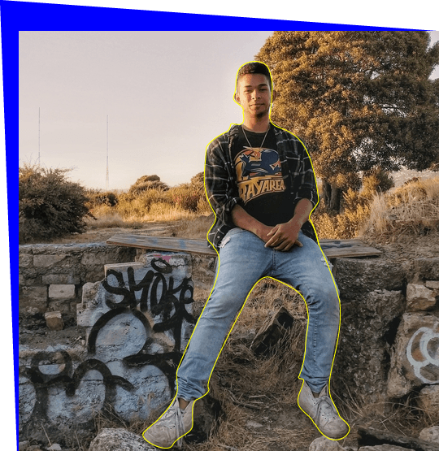
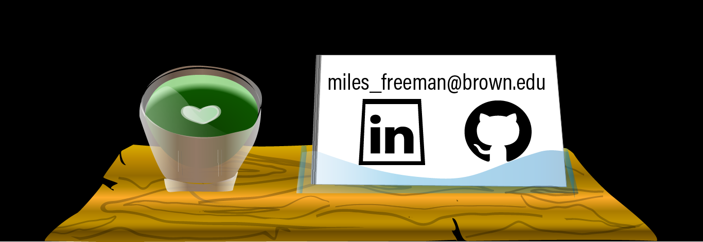

Mathematical Python for Business:

Viral Marketing Analysis: Discrete Time Markov Chain Epidemiological Model

+Soy programmador y barista de la bahia de San Francisco
+Estudio ciencia de la computación en Brown University
+He hecho trabajo para la NASA y cumplido unos proyectos freelance (diseño web y analisis de datos)
